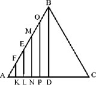
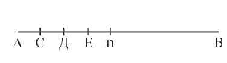
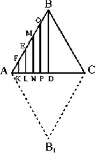

Беседа 797 от 3877 · Беинса Дуно
Условия лежащи в триъгълника
(Младежки Окултен Клас, 09.11.1924 Неделя, София)
Любовта ражда доброто.
Доброто носи за нас Живот, Светлина и Свобода.
Размишление
Прочетоха се темите: „Първата отличителна черта на мисълта.”
Тема 3: Ще извадите основните мисли на първата лекция от четвъртата година. Да видим кой какви основни мисли ще извади.
Методий, излез и начертай на дъската един равностранен триъгълник по всичките правила на чертането.


Тогава това със съотношения между линиите в триъгълника. АВ представлява външните условия, а АС това е почвата или условията, при които този живот се проявява. Философски погледнато, какви причини може да има в дадения случай, че това дете е умряло на 10 години? Три причини може да има: първата причина може да бъдат бащата и майката; втората причина – обществото и третата причина – само детето е скъсило живота си. Причината може да се определи и по закона на математическите вероятности. Да обясня същото по друг начин. Вие хвърляте един камък. Той се издига до известна височина и се спира при F. Значи вие с малка сила сте го хвърлили. Следващия път хвърляте камъка по-силно – достига до Е. После – до М, до О, а като достигне до В, то ще бъде най-голямата сила, с която сте хвърлили този камък. Следователно ще знаете – АВС това е правилният цикъл на движението.

Ако на вашата ръка има астрологически белег, че след десет години ще заминете за другия свят, питам, ако вие знаете това, можете ли да продължите живота си? (–Може, но ако е дете, няма да може.) Но има и разумни деца. Но ние ще приложим закона иначе. До тук беше за вашия физически живот. Но представете си друго. Вие постъпвате в една окултна школа. Най-първо вие сте в точката А, нищо не знаете. Дойдете до точката F – това е първата година. До тук дойдете и си излезете, колко ще знаете? Изминали сте пътя АК, достигнали сте до F. Друг ученик продължава пътя си и през втората година стига до L и точката Е и си отива, напуща училището. Е, кой тогава ще бъде истинския ученик? Който завърши целия цикъл. Ето ви един нов начин на разсъждение, с който вие още не сте запознати. Например вие говорите за триъгълници, но не знаете тази идея, която триъгълникът крие в себе си. И колко още идеи има скрити в триъгълника.
Сега това ви навеждам, за да имате постоянство, като почнете нещо, да го изкарате до край. А сега мнозина от вас нямате постоянство. Например забелязвам, че не всички си пишете темите. А ония, които ги пишат, пишат ги като останат 5 минути, тогава почват да мислят какво да пишат. Но това е криво разсъждение. През цялата неделя [*неделя – (рус.) седмица] ти можеш да мислиш върху темата си, да стане тя добре позната в съзнанието ти. Ти можеш да вършиш каквато и да е работа и пак да помислиш за темата си. После, няма ли да намерите 5 минути всеки ден празно време да помислите за темата си? 5 х 6 = 30. 30 минути ако мислите през седмицата, достатъчно е. А вие колко мислите върху една тема? Трябва да знаете, че всичките теми, които се развиват тук, са за усилване на вашия характер. И когато човек развива известни мисли в света, той едновременно със своята мисъл спомага на всички хора. Не мислете, че с вашата мисъл не спомагате на човечеството. Едно от двете, вие или спомагате или спъвате цялото човечество. Защото вие не сте сами, вие имате връзка с цялото човечество. И ако искате да бъдете учени хора, вие трябва да мислите и не трябва никога да казвате: „Аз нямам време.”
После в посещението ви в класа трябва да бъдете много редовни. Веднъж човек постъпи ли в един окултен клас, той трябва да бъде много редовен. Защото по това се познава дали имате характер. Ще помните едно: като дадеш едно обещание, ти си задължен вече и нищо не може да те извини. Небето не обича залъгалки. Никой не те свързва, но за себе си, дадеш ли едно обещание, нищо не те извинява. Ще изпълнявате обещанията си. И ако вие пропуснете каквато и да е тема и не я напишете или си кажете: „Може и да не ида в клас,“ вие скоро ще платите с живота си за това. Та затова се изисква в всичко да бъдете абсолютно редовни. И живата природа обича голяма редовност. И ако спазвате тази редовност, вие ще забележите, че ще настане една промяна в живота ви. Аз бих желал всички да решите в себе си да бъдете редовни и изправни.
Сега мнозина от вас мислят, че свободата на човека седи в това, човек да мисли каквото иска. Не, свободата на човека седи в това да мислиш това, за което не искаш. А кое нещо човек не иска? Например да ядеш една хубава, топла баница, туй кой не го желае? В този случай в какво седи волята? - Да не ядеш баницата. Повикай друг някой от улицата и го покани да яде баницата пред тебе, а ти само да гледаш. Това е воля – да направиш това, което не искаш. В това седи свободата. А има и други такива случаи, когато баницата е приготвена за тебе, а друг я изяжда, защото твоят стомах е развален. Ти ще мислиш с мисълта на онзи, който яде, и ще се радваш, че той яде.
Сега в науката има известни положения, които трябва да изучавате. Например вие още не сте се спрели като гръцките философи да се запитате вие като индивид какво представлявате. Вие казвате: „Аз съм.“ Но кой си ти? Казвате: „Ама аз мога да мисля.“ Като можеш да мислиш, кажи какви задачи можеш да решаваш? Или в какво седи тази мисъл? „Ама аз се самоосъзнавам.“ Много добре, в какво се самоосъзнаваш? Щом се самоосъзнаваш в тялото си, аз рекох: „Излез из тялото си малко да се поразговорим.“ „Е, как тъй?“ Че първото нещо, щом се самоосъзнаваш, трябва да излезеш из тялото си навън и всякога трябва да си господар на тялото си. Казваш: „Е, не мога да изляза из тялото си навън.“ Тогава ти си един затворник, ти мислиш със своите окови, не мислиш като един свободен човек. Дотогава, докато човек е свързан със своя личен живот, докато той е свързан със своя семеен живот, с обществения живот и с човешкия живот, той е все ограничен. Те са 4 положения, които трябва да надраснете. И всички древни школи са имали научни методи, т.е. ред препятствия, които те требвало да превъзмогнат за усъвършенстването на своя характер.
Сега по триъгълника. Когато човек умира млад, три причини може да има: самата почва може да е причина – основата на триъгълника АС. Във втория случай обществото може да е причина – АВ, а в третия случай самия индивид – КF. Значи, три различни положения може да има. Всъщност умът, сърцето и волята на човека вървят заедно. Вие не можете никога да отделите ума на човека или сърцето му или волята му. Те трите са неделими.
Знайте друго: външната среда не може да бъде по-силна от нас. (– Как да си изясним факта, че като дойдат известни течения в живота, едни издържат, а други не?) Причината е в самия индивид. (– Трябва да приемем тогава, че външните условия са едни и същи за всички.) (– При хвърляне едно тяло има пак три причини: с каква сила се хвърля тялото, въздействието на средата, дали е въздух или вода, и земното притегляне.)
За съпротивление може да се говори само на физическия свят. Съпротивленията в умствения свят са от друг род, също и съпротивленията в чувствения свят са от друго естество. Например какви съпротивления може да има в умствения свят на човека или в неговия чувствен свят? (– Съпротивление в умствения свят представлява кривото разбиране на нещата. Тъмнината.) Представете си, че вие се намирате в един идеален свят, както е било първоначално, тогава как се родиха противоречията между хората? Първоначално всички хора излезли при едни и същи условия, а при това виждаме туй голямо различие, което днес съществува?
Сега да обясня друго едно явление: човек, който обича храната, къде ще се спре? – В някоя гостилница. Човек, който обича знанията, къде ще се спре? – В някое училище. Който обича да се моли? – В някоя църква ще се спре. Онзи, който обича хорцето, и т.н. Всеки човек ще спре там, дето той желае. Възможностите за всеки човек са еднакви, но строежа на всеки човек не е еднакъв, защото всеки един е задължен да строи сам. И вследствие на това може да обясним, че някои индивиди са използвали условията добре, а други – не са.
Сега вашият ум седи в едно заблуждение. То е следното. Вие сега вземате предвид вашите бащи и майки, вземате предвид и обществото. Но представете си, че едно време е немяло бащи и майки и общество, ти сам си бил и индивид, и баща, и майка, и общество. Тъй е било първоначално. Клетката сама се размножава, разделя се, значи общество е нямало тогава. (– Но, за да се появи човек, макар и като клетка, все е съществувала известна природа около него.) Слушайте, математически трябва да разсъждавате. Вие не можете да извадите една част от своето цяло. Вие математически можете да извадите и логически може да го делите, изваждате, да туряте дроби, но в природата никога не можеш да делиш частта от цялото. Математически вие може да делите дробите колкото искате, но в природата такова деление няма. Цялото се проектира в своите части. Туй цяло държи частите в себе си. Всяка част е зависима от другите. Ако вие сте една част на едно цяло, тогава ще кажете: „Условията са такива.“ Няма никакви условия, това е идеята вътре във вас, която действа. И тогава в духовния свят всяка една част има условията на цялото в себе си, може да се развива, а може да дойде и в противоречие с цялото, но в края на краищата тази част трябва да се примири с цялото, тя не може да излезе извън цялото.
Сега съвременните хора искат да излязат от цялото – там е всичката борба. Но това е невъзможно. Всяка част си има известно отражение. И като рекох, че ние по ум не се различаваме един от друг, разбирам, че общия ум, който действа в нас, е един и същ. Но умът на цялото не може да се побере в своята част. Във висшата окултна математика частта може да бъде равна на цялото, но частта не може да стане по-голяма от цялото, едно положение. А цялото може да стане по-голямо от частта. Ето разликата, това са двете положения. Тук седи онази велика необходимост, която ограничава частите и те трябва да се подчиняват, то е един вътрешен закон на битието.
Та ние можем да бъдем като цялото, но по-големи от цялото не можем да бъдем. И следователно, всеки един трябва да се движи в рамките на туй цяло. Схванахте ли разликата сега? Вие няма да разсъждавате с ума на обществото и с ума на съвременните хора, то е крив ум. Крив, понеже той се е спрял в известен етап. Съвременното мислене не е мислене на целокупното човечество, защото за да мислим право трябва да съберем всичките хора от създание мира и всичките, които за в бъдеще ще дойдат – това е цялото. А сега имаме една малка част, наречена общество, но туй не е цялото. Теософите предполагат, че има 60 милиарда човешки души, които образуват цялото. А сега на земята има един и половина милиард, да допуснем, че са два милиарда, а тогава не допускате ли, че в другия свят те не съставят условие за развитие? Значи в невидимия свят има повече души, а вие тях нямате пред вид. И дисхармонията, която сега се забелязва, е само по отношение на нашия живот, а не по отношение на този, целокупния живот. Мислите ли, че цялото, което е по-голямо от частта си, ще позволи на своята част да си играе с него? То е немислимо. Най-първо хората мислят, че знаят много, че са всесилни и в младите си години всички стават безверници, понеже уповават на своята сила. Като минат 45-50 години стават набожни, а към 80-та година всички се предават и вярват в Невидимия свят. Това е една слабост на човешкия ум.
(– Всички души едновременно ли са създадени?) Не, те са излезли при разни условия. (– Тогава различието е напълно обяснимо.) Всички души са излезли в битието в един определен цикъл последователно. Възможно ли е човек да се роди по всяко време? Има дати, дето е невъзможно да се роди човек. За всяко раждане си има точно определени математически дати. Астрологически е доказано това. Сега астролозите вземат под внимание само планетите, а при това всичките звезди, които съществуват, упражняват голямо влияние. Следователно разнообразието седи в това, коя звезда кому как влияе. И дето се различават хората, то е по причина на тия звезди, а те са безброй, и от там съществува туй разнообразие между хората.
Сега това е едно упражнение за ума ви, да се хвърли една по-свежа мисъл, да знаете, че всичко в света не е атавистически или както турците вярват, фатализъм, т.е. че всичко е определено. Нещата действително са точно определени, но в туй определение на живата природа съществува една абсолютна справедливост и свобода. Т.е. ти, като излезеш в пътя на живота си, не трябва да закъсняваш! Закъснееш ли веднъж, мъчно можеш да намериш пътя на своята среда. Ти вече излизаш вън от тази струя и трябва дълго време да чакаш докато те турят някъде. Там е всичката опасност, затова ти трябва да пазиш своя път и да се не отклоняваш. А човек може да загуби пътя си по причина на едно мимолетно желание само, но туй желание е в сила да те изкара из пътя, а веднъж излязъл из пътя, течението си върви, а ти сам със силата си не можеш да влезеш на друго место, освен ако те турят.
Та всички трябва да бъдете много внимателни. Някой път вие излизате из вашия път и казвате: „После пак ще влезна.“ Но не можеш да влезеш тъй както и да е. Сега вие можете да мислите, че такава е съдбата, но за да те съдят, кой е причината? Ти като извършиш едно престъпление ще те съдят. И можем да кажем 50% човек сам си е причина дето го съдят.
Сега ще турите в ума си да развиете тази черта в себе си: да учите правилно, да мислите правилно. Всички трябва да имате в основата си правилна мисъл. Ако тази мисъл е в пътя, по който вървите и не ви отклонява, тя е правилна, дръжте я. Ако тази мисъл ви отклонява не я приемайте, отхвърлете я. Всяка мисъл, която ще ви помогне в пътя, по който вървите, дайте й ход. А всяка мисъл, която може да ви спре или отклони, на тази мисъл не давайте място, тя не е ваша мисъл, тя е чужда. Същото е и за желанията.
Защо много хора боледуват? Как схващате това? Кои са причините за явяването на толкова много болести? (– Че човек влиза в известна среда, която не е за него.) Прав сте, до известна степен е така. Всички съгласни ли сте? Но аз ще ви дам един друг пример: баща и майка искат много да имат дете, създават условие за него, гледат го много добре, треперят над него, а при това след 4-5 години детето умира. Коя е причината? Три възможности има: първото предположение е, че малка е любовта в дома. Ако пък детето се ражда глупаво, че не може да се учи – малка е мъдростта в дома; ако детето се ражда хилаво, че не е свободно в живота си – истината е малка. Тъй седи въпросът. Втората причина, това е ако в обществото няма любов, мъдрост и истина. И третата причина може да бъде самия индивид. Любовта е сила в природата, без нея се явяват болести.
Може да направите следния опит: най-здравият от вас да излиза всяка вечер една седмица наред при залез слънце и да каже: „Аз ще се разболея.“ Друг пък, който е малко болен, да става рано, когато слънцето изгрева и да казва: „Аз ще оздравея, аз ще бъда здрав.“ И след една седмица ще видите как ще ви подействуват тия сили сутрин и вечер.
Сега външните промени в живота вас често ви спъват. Аз забелязвам щом някои срещнат препятствие в живота, искат или да излязат от тази среда, или да умрат. Младият, гледаш го, не иска да живее или иска да измени средата. Но тази среда може да я измените само по един разумен начин. Също и за някои неща можете да желаете умирането. Има едно разумно умиране, а не да умирате глупаво, без да знаете защо умирате. По-жалко нещо няма от това. Някой казва: „Искам да умра.“ Защо? -“Дотегна ми живота.“ То е глупаво умиране. Друг пък казва: „Искам да умра.“ Защо? „Искам да уча музиката, пък на земята няма условия, горе ще ида.“ Рекох, тогава върви по-скоро. Или пък казва: „Искам да уча доброто, пък понеже тук няма условия за доброто, искам да замина за другия свят.“ -Хубаво, но ще дадеш едно прошение там. И ако в туй училище, в което искаш да постъпиш, има вакантни места, ще идеш. А ако няма място, ще чакаш година, две, пет, десет и като те приемат, нито минута не се бави. Но не да умирате преждевременно и да подсмърчате някъде, а да нямате място никъде – няма по-ужасно нещо от това. Тогава желайте да умрете!
Вие ходили ли сте в онзи свят да видите какво е там без тяло, ако не ви е дошло времето? Затова туй училище е необходимо за вас. Пък ако тук не си пишете темите, как ще ги пишете горе? Ако тук сте нередовни, като идете в другия свят, че там вашите работи съвсем ще се забъркат. Ако тук сте мързелив и там ще бъдете мързелив. Същите качества, които човек има тук и там ще ги има. А тук човек по-скоро се поправя. Смъртта не изменя човека, тя само го ограничава, но у него потенциално всичко остава. Там човек няма стомах, но желанието у него да яде и пие остава. Желанията седят, но органите ги няма. И там искат да го научат, че не трябва да пие, понеже няма орган. И там е лошото, че онези хора, които умират с много желания и като нямат органи, влизат в други хора и усилват у тях желанието за пиене повече. И така се правят много престъпления. Затуй щом ти се пие някой път много винце, не пий, защото туй пресилено желание не е твое. Ще му кажеш: „Ти и без винце можеш.”
Сега на мисълта. Всички трябва да се стремите да усвоите този правилен равностранен триъгълник. Всеки трябва да си тури за идея да стане един равностранен триъгълник и да владее всичките линии на този триъгълник – външни и вътрешни; и почвата, и условията, вие сами на себе си да бъдете господари. Да разбирате перпендикулярите, три вида перпендикуляри има, могат да се спуснат в един триъгълник. А вие трябва да можете да владеете тия три вида перпендикуляри. Сега разгледахме само перпендикулярите, спуснати към почвата. А има още два вида перпендикуляри. В друга лекция ще се спрем още да видим какво значи перпендикуляр. (– Най-късото разстояние между точка и права.) Нали перпендикуляр това е една проява в живота. Силови прояви са те, понеже всичките сили се движат по права линия. Те образуват перпендикуляр или най-късото разстояние на движението, а това е път на силите в живота.
Размишление.
Любовта ражда доброто.
Доброто внася в нас Живот, Светлина и Свобода.
IV година 4 школна лекция на I младежки Окултен Клас , 9. XI. 1924 год., Неделя 7 часа вечерта, София
Младежки Окултен Клас
09.11.1924 Неделя, София